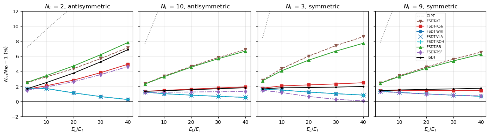

Buckling of cross-ply plates in uniaxial compression: Noor (1975)#
Noor, Stability of multilayered composite plates, Fibre Science and Technology 8 (1975) 81-89.
Square cross-ply plates, simply supported on the four edges (SS-1), under the uniaxial compression \(N_{xx}\), with the 3D elasticity solution of the linear buckling problem as reference:
material: \(G_{LT} = 0.6 E_T\), \(G_{TT} = 0.5 E_T\), \(\nu_{LT} = \nu_{TT} = 0.25\) and \(E_L/E_T\) from 3 to 40;
lay-ups with \(N_L\) layers, the top layer at 0 deg (along the load), antisymmetric with an even number of layers (\(N_L\) = 2, 4, 6, 10) and symmetric with an odd number (\(N_L\) = 3, 5, 9), the 0 and 90 deg layers having the same total thickness (p. 84);
Table 2: 3D buckling load \(\bar{N} = N_{cr} a^2/(E_T h^3)\) for \(a/h = 10\) and \(E_L/E_T\) = 3, 10, 20, 30, 40;
Table 3: \(E_L/E_T = 30\), \(a/h = 10\) and 5, \(N_L\) = 2, 3, 9, 10, the 3D values and the ratios \(N_{SDT}/N_{3D}\) of Noor’s shear deformation theory with \(\kappa = 1\), \(\kappa = 5/6\) and the composite factors of his Table 1, which follow Chow and Whitney;
Table 1: the composite shear correction factors for \(E_L/E_T = 30\).
The reference data, from the tables of the paper, are in scf_validation_utils.py.
[1]:
%matplotlib inline
import os
import numpy as np
import matplotlib.pyplot as plt
from IPython.display import Markdown, display
from composites import laminated_plate
from structsolve import lb
import scf_validation_utils as su
from scf_validation_utils import pct, markdown_table
# True runs panels again, otherwise the results saved in RESULTS are loaded
RERUN = True
RESULTS = 'results'
Laminates and shear correction factors#
The plies of Noor’s laminates, noor_plyts, and his composite factors of Table 1 against the factors \(\kappa_{13}\) (along the fibres of the top layer) and \(\kappa_{23}\) of 'whitney' in composites, for \(E_L/E_T = 30\), together with those of the other corrections compared below.
[2]:
E2 = 1.
SCFS = ['K1', 'K56', 'WHI', 'VLA', 'ROH', 'BB', 'TSF']
def laminaprop(E1E2):
return (E1E2*E2, E2, 0.25, 0.6*E2, 0.6*E2, 0.5*E2)
def cross_ply(num_layers):
return [0 if i % 2 == 0 else 90 for i in range(num_layers)]
def noor_plyts(stack, h):
r'''Same total thickness of the 0 and 90 deg layers (Noor, p. 84)'''
n0 = sum(1 for t in stack if t == 0)
n90 = len(stack) - n0
return [h/2/n0 if t == 0 else h/2/n90 for t in stack]
rows = []
for NL, (k1, k2) in su.NOOR_1975_TABLE_1.items():
stack = cross_ply(NL)
args = (stack, noor_plyts(stack, 1.), [laminaprop(30)]*NL, [1.]*NL)
w13, w23 = su.kappas('WHI', *args)
rows.append([NL, 'antisymmetric' if NL % 2 == 0 else 'symmetric', '%.4f / %.4f' % (k1, k2), '%.4f / %.4f' % (w13, w23)]
+ ['%.4f / %.4f' % su.kappas(k, *args) for k in ('VLA', 'ROH', 'BB', 'TSF')])
display(Markdown(markdown_table(['$N_L$', 'laminate', 'Noor, Table 1', "'whitney'", "'vlachoutsis'", "'rohwer'",
"'birman_bert'", "'thickness_shear'"], rows)))
\(N_L\) |
laminate |
Noor, Table 1 |
‘whitney’ |
‘vlachoutsis’ |
‘rohwer’ |
‘birman_bert’ |
‘thickness_shear’ |
|---|---|---|---|---|---|---|---|
2 |
antisymmetric |
0.6421 / 0.6421 |
0.6421 / 0.6421 |
0.6421 / 0.6421 |
0.6417 / 0.6417 |
1.0571 / 1.0571 |
0.8140 / 0.8140 |
4 |
antisymmetric |
0.6523 / 0.6523 |
0.6523 / 0.6523 |
0.6523 / 0.6523 |
0.6522 / 0.6522 |
0.9981 / 0.9981 |
0.8152 / 0.8152 |
6 |
antisymmetric |
0.7422 / 0.7422 |
0.7422 / 0.7422 |
0.7422 / 0.7422 |
0.7422 / 0.7422 |
0.9943 / 0.9943 |
0.8155 / 0.8155 |
10 |
antisymmetric |
0.7947 / 0.7947 |
0.7947 / 0.7947 |
0.7947 / 0.7947 |
0.7947 / 0.7947 |
0.9926 / 0.9926 |
0.8156 / 0.8156 |
3 |
symmetric |
0.8274 / 0.5412 |
0.8274 / 0.5412 |
0.8274 / 0.5412 |
0.8274 / 0.5410 |
0.9663 / 1.0764 |
0.7707 / 0.8653 |
5 |
symmetric |
0.8732 / 0.5914 |
0.8732 / 0.5914 |
0.8732 / 0.5914 |
0.8732 / 0.5913 |
0.9759 / 1.0174 |
0.7985 / 0.8330 |
7 |
symmetric |
0.8769 / 0.6749 |
0.8769 / 0.6749 |
0.8769 / 0.6749 |
0.8769 / 0.6749 |
0.9802 / 1.0077 |
0.8043 / 0.8271 |
9 |
symmetric |
0.8736 / 0.7170 |
0.8736 / 0.7170 |
0.8736 / 0.7170 |
0.8736 / 0.7170 |
0.9826 / 1.0034 |
0.8071 / 0.8243 |
panels model#
The plates are modelled by su.make_shell with the Donnell plate models of the CLPT, FSDT and TSDT, \(12 \times 12\) terms and the hard simple support (SS-1) on the four edges, bcs='SSSS', under the membrane prestate \(N_{xx} = -1\), and the linear buckling problem is
s.Nxx = -1.
eigvals, eigvecs = lb(s.calc_kC(), s.calc_kG(), num_eigvalues=30)
The FSDT is run with \(\kappa = 1\) (K1), \(\kappa = 5/6\) (K56), 'whitney' (WHI, Noor’s composite factors), 'vlachoutsis' (VLA), 'rohwer' (ROH), 'birman_bert' (BB) and 'thickness_shear' (TSF, with a uniform density, \(\rho = 1\)), see su.SCF. For each model two loads are kept: the lowest eigenvalue, the critical load, and the eigenvalue of the mode with one half-wave in each direction, \((m, n) = (1, 1)\), identified by
counting the half-waves of the mode shapes, halfwaves. For the thick plates of Table 3 (\(a/h = 5\)) the critical mode of the FSDT and of the TSDT has \(m = 2\), see below.
[3]:
M = 12
def halfwaves(s, c, n=61):
r'''Number of half-waves (m, n) of the mode c along x and y, through the point of maximum |w|'''
xs, ys = np.linspace(0, s.a, n), np.linspace(0, s.b, n)
X, Y = np.meshgrid(xs, ys, indexing='ij')
w = s.uvw(c, xs=X.ravel(), ys=Y.ravel())[1]['w'].copy().reshape(n, n)
i, j = np.unravel_index(np.argmax(np.abs(w)), w.shape)
def count(v):
v = v[np.abs(v) > 1e-3*np.abs(w).max()]
return int(np.sum(np.diff(np.sign(v)) != 0)) + 1
return count(w[:, j]), count(w[i, :])
def buckling(theory, scf, ah, NL, E1E2, num_eigvalues=30):
r'''Normalized critical load and mode, and the load of the (1, 1) mode'''
a = 1.
h = a/ah
stack = cross_ply(NL)
s = su.make_shell(theory, a, a, stack, noor_plyts(stack, h), [laminaprop(E1E2)]*NL, [1.]*NL, scf=scf,
bcs='SSSS', m=M, n=M)
s.Nxx = -1.
eigvals, eigvecs = lb(s.calc_kC(), s.calc_kG(), silent=True, num_eigvalues=num_eigvalues)
norm = a**2/(E2*h**3)
out = dict(N=float(eigvals[0])*norm, mode=halfwaves(s, eigvecs[:, 0]))
for i in range(len(eigvals)):
if (out['mode'] if i == 0 else halfwaves(s, eigvecs[:, i])) == (1, 1):
out.update(N11=float(eigvals[i])*norm, index11=i)
break
return out
def run(ah, NL, E1E2):
stack = cross_ply(NL)
return {label: buckling(theory, scf, ah, NL, E1E2)
for label, theory, scf in su.models(SCFS, stack, noor_plyts(stack, 1.), [laminaprop(E1E2)]*NL, [1.]*NL)}
def compute():
res = {}
for NL in su.NOOR_1975_TABLE_2:
for E1E2 in su.NOOR_E:
res['T2 NL%d E%d' % (NL, E1E2)] = run(10, NL, E1E2)
for ah, NL in su.NOOR_1975_TABLE_3:
res['T3 ah%d NL%d' % (ah, NL)] = run(ah, NL, 30)
return res
res = su.run_or_load(os.path.join(RESULTS, 'noor1975_buckling.json'), compute, rerun=RERUN)
MODELS = ['CLPT'] + ['FSDT-' + k for k in SCFS] + ['TSDT']
computed in 234 s, saved to results/noor1975_buckling.json
Table 2: \(a/h = 10\)#
Critical load \(\bar{N} = N_{cr} a^2/(E_T h^3)\), with the difference to the 3D solution of Noor in parentheses. The critical mode of all models is \((1, 1)\) in these cases (checked below).
[4]:
for NL, refs in su.NOOR_1975_TABLE_2.items():
rows = []
for E1E2, ref in zip(su.NOOR_E, refs):
r = res['T2 NL%d E%d' % (NL, E1E2)]
rows.append([E1E2, '%.4f' % ref] + ['%.3f (%+.1f%%)' % (r[m]['N'], pct(r[m]['N'], ref)) if m in r else '-'
for m in MODELS])
display(Markdown('**$N_L$ = %d, %s**' % (NL, 'antisymmetric' if NL % 2 == 0 else 'symmetric')))
display(Markdown(markdown_table(['$E_L/E_T$', '3D'] + MODELS, rows)))
modes = {tuple(r[m]['mode']) for k, r in res.items() if k.startswith('T2') for m in r}
print('critical modes of Table 2:', modes)
:math:`N_L` = 2, antisymmetric
\(E_L/E_T\) |
3D |
CLPT |
FSDT-K1 |
FSDT-K56 |
FSDT-WHI |
FSDT-VLA |
FSDT-ROH |
FSDT-BB |
FSDT-TSF |
TSDT |
|---|---|---|---|---|---|---|---|---|---|---|
3 |
4.6948 |
5.034 (+7.2%) |
4.814 (+2.5%) |
4.772 (+1.6%) |
4.774 (+1.7%) |
4.774 (+1.7%) |
4.774 (+1.7%) |
4.815 (+2.6%) |
4.766 (+1.5%) |
4.775 (+1.7%) |
10 |
6.1181 |
6.703 (+9.6%) |
6.318 (+3.3%) |
6.247 (+2.1%) |
6.224 (+1.7%) |
6.224 (+1.7%) |
6.224 (+1.7%) |
6.329 (+3.4%) |
6.236 (+1.9%) |
6.272 (+2.5%) |
20 |
7.8196 |
8.816 (+12.7%) |
8.162 (+4.4%) |
8.042 (+2.8%) |
7.910 (+1.2%) |
7.910 (+1.2%) |
7.909 (+1.1%) |
8.189 (+4.7%) |
8.026 (+2.6%) |
8.115 (+3.8%) |
30 |
9.3746 |
10.891 (+16.2%) |
9.910 (+5.7%) |
9.735 (+3.8%) |
9.436 (+0.7%) |
9.436 (+0.7%) |
9.436 (+0.6%) |
9.959 (+6.2%) |
9.710 (+3.6%) |
9.869 (+5.3%) |
40 |
10.8167 |
12.957 (+19.8%) |
11.592 (+7.2%) |
11.353 (+5.0%) |
10.846 (+0.3%) |
10.846 (+0.3%) |
10.845 (+0.3%) |
11.665 (+7.8%) |
11.319 (+4.6%) |
11.563 (+6.9%) |
:math:`N_L` = 4, antisymmetric
\(E_L/E_T\) |
3D |
CLPT |
FSDT-K1 |
FSDT-K56 |
FSDT-WHI |
FSDT-VLA |
FSDT-ROH |
FSDT-BB |
FSDT-TSF |
TSDT |
|---|---|---|---|---|---|---|---|---|---|---|
3 |
5.1738 |
5.574 (+7.7%) |
5.305 (+2.5%) |
5.254 (+1.6%) |
5.234 (+1.2%) |
5.234 (+1.2%) |
5.233 (+1.2%) |
5.304 (+2.5%) |
5.248 (+1.4%) |
5.252 (+1.5%) |
10 |
9.0164 |
10.295 (+14.2%) |
9.414 (+4.4%) |
9.255 (+2.6%) |
9.075 (+0.7%) |
9.075 (+0.7%) |
9.075 (+0.6%) |
9.411 (+4.4%) |
9.235 (+2.4%) |
9.231 (+2.4%) |
20 |
13.7429 |
16.988 (+23.6%) |
14.716 (+7.1%) |
14.332 (+4.3%) |
13.785 (+0.3%) |
13.785 (+0.3%) |
13.785 (+0.3%) |
14.711 (+7.0%) |
14.282 (+3.9%) |
14.254 (+3.7%) |
30 |
17.7829 |
23.675 (+33.1%) |
19.482 (+9.6%) |
18.815 (+5.8%) |
17.801 (+0.1%) |
17.801 (+0.1%) |
17.801 (+0.1%) |
19.475 (+9.5%) |
18.730 (+5.3%) |
18.667 (+5.0%) |
40 |
21.2796 |
30.359 (+42.7%) |
23.793 (+11.8%) |
22.806 (+7.2%) |
21.269 (-0.0%) |
21.269 (-0.0%) |
21.269 (-0.1%) |
23.783 (+11.8%) |
22.681 (+6.6%) |
22.579 (+6.1%) |
:math:`N_L` = 6, antisymmetric
\(E_L/E_T\) |
3D |
CLPT |
FSDT-K1 |
FSDT-K56 |
FSDT-WHI |
FSDT-VLA |
FSDT-ROH |
FSDT-BB |
FSDT-TSF |
TSDT |
|---|---|---|---|---|---|---|---|---|---|---|
3 |
5.2673 |
5.674 (+7.7%) |
5.395 (+2.4%) |
5.343 (+1.4%) |
5.331 (+1.2%) |
5.331 (+1.2%) |
5.331 (+1.2%) |
5.394 (+2.4%) |
5.336 (+1.3%) |
5.342 (+1.4%) |
10 |
9.6051 |
10.960 (+14.1%) |
9.967 (+3.8%) |
9.789 (+1.9%) |
9.693 (+0.9%) |
9.693 (+0.9%) |
9.693 (+0.9%) |
9.961 (+3.7%) |
9.766 (+1.7%) |
9.776 (+1.8%) |
20 |
15.0014 |
18.502 (+23.3%) |
15.838 (+5.6%) |
15.394 (+2.6%) |
15.104 (+0.7%) |
15.104 (+0.7%) |
15.104 (+0.7%) |
15.824 (+5.5%) |
15.338 (+2.2%) |
15.352 (+2.3%) |
30 |
19.6394 |
26.042 (+32.6%) |
21.057 (+7.2%) |
20.280 (+3.3%) |
19.744 (+0.5%) |
19.744 (+0.5%) |
19.744 (+0.5%) |
21.034 (+7.1%) |
20.183 (+2.8%) |
20.201 (+2.9%) |
40 |
23.6689 |
33.582 (+41.9%) |
25.727 (+8.7%) |
24.578 (+3.8%) |
23.767 (+0.4%) |
23.767 (+0.4%) |
23.767 (+0.4%) |
25.693 (+8.6%) |
24.434 (+3.2%) |
24.460 (+3.3%) |
:math:`N_L` = 10, antisymmetric
\(E_L/E_T\) |
3D |
CLPT |
FSDT-K1 |
FSDT-K56 |
FSDT-WHI |
FSDT-VLA |
FSDT-ROH |
FSDT-BB |
FSDT-TSF |
TSDT |
|---|---|---|---|---|---|---|---|---|---|---|
3 |
5.3159 |
5.725 (+7.7%) |
5.442 (+2.4%) |
5.388 (+1.4%) |
5.382 (+1.2%) |
5.382 (+1.2%) |
5.382 (+1.2%) |
5.440 (+2.3%) |
5.382 (+1.2%) |
5.388 (+1.4%) |
10 |
9.9134 |
11.300 (+14.0%) |
10.248 (+3.4%) |
10.060 (+1.5%) |
10.017 (+1.0%) |
10.017 (+1.0%) |
10.017 (+1.0%) |
10.240 (+3.3%) |
10.036 (+1.2%) |
10.056 (+1.4%) |
20 |
15.6685 |
19.277 (+23.0%) |
16.402 (+4.7%) |
15.927 (+1.7%) |
15.801 (+0.8%) |
15.801 (+0.8%) |
15.801 (+0.8%) |
16.384 (+4.6%) |
15.867 (+1.3%) |
15.914 (+1.6%) |
30 |
20.6347 |
27.254 (+32.1%) |
21.842 (+5.9%) |
21.008 (+1.8%) |
20.777 (+0.7%) |
20.777 (+0.7%) |
20.777 (+0.7%) |
21.810 (+5.7%) |
20.904 (+1.3%) |
20.986 (+1.7%) |
40 |
24.9636 |
35.232 (+41.1%) |
26.685 (+6.9%) |
25.450 (+1.9%) |
25.102 (+0.6%) |
25.102 (+0.6%) |
25.102 (+0.6%) |
26.637 (+6.7%) |
25.297 (+1.3%) |
25.422 (+1.8%) |
:math:`N_L` = 3, symmetric
\(E_L/E_T\) |
3D |
CLPT |
FSDT-K1 |
FSDT-K56 |
FSDT-WHI |
FSDT-VLA |
FSDT-ROH |
FSDT-BB |
FSDT-TSF |
TSDT |
|---|---|---|---|---|---|---|---|---|---|---|
3 |
5.3044 |
5.754 (+8.5%) |
5.455 (+2.8%) |
5.399 (+1.8%) |
5.391 (+1.6%) |
5.391 (+1.6%) |
5.390 (+1.6%) |
5.451 (+2.8%) |
5.384 (+1.5%) |
5.393 (+1.7%) |
10 |
9.7621 |
11.492 (+17.7%) |
10.189 (+4.4%) |
9.965 (+2.1%) |
9.911 (+1.5%) |
9.911 (+1.5%) |
9.911 (+1.5%) |
10.161 (+4.1%) |
9.879 (+1.2%) |
9.941 (+1.8%) |
20 |
15.0191 |
19.712 (+31.2%) |
15.927 (+6.0%) |
15.351 (+2.2%) |
15.208 (+1.3%) |
15.208 (+1.3%) |
15.208 (+1.3%) |
15.847 (+5.5%) |
15.119 (+0.7%) |
15.298 (+1.9%) |
30 |
19.3040 |
27.936 (+44.7%) |
20.739 (+7.4%) |
19.757 (+2.3%) |
19.506 (+1.0%) |
19.506 (+1.0%) |
19.506 (+1.0%) |
20.598 (+6.7%) |
19.363 (+0.3%) |
19.674 (+1.9%) |
40 |
22.8807 |
36.160 (+58.0%) |
24.855 (+8.6%) |
23.453 (+2.5%) |
23.078 (+0.9%) |
23.078 (+0.9%) |
23.078 (+0.9%) |
24.653 (+7.7%) |
22.899 (+0.1%) |
23.340 (+2.0%) |
:math:`N_L` = 5, symmetric
\(E_L/E_T\) |
3D |
CLPT |
FSDT-K1 |
FSDT-K56 |
FSDT-WHI |
FSDT-VLA |
FSDT-ROH |
FSDT-BB |
FSDT-TSF |
TSDT |
|---|---|---|---|---|---|---|---|---|---|---|
3 |
5.3255 |
5.754 (+8.0%) |
5.464 (+2.6%) |
5.409 (+1.6%) |
5.400 (+1.4%) |
5.400 (+1.4%) |
5.399 (+1.4%) |
5.461 (+2.5%) |
5.401 (+1.4%) |
5.410 (+1.6%) |
10 |
9.9603 |
11.492 (+15.4%) |
10.338 (+3.8%) |
10.136 (+1.8%) |
10.079 (+1.2%) |
10.079 (+1.2%) |
10.078 (+1.2%) |
10.324 (+3.6%) |
10.098 (+1.4%) |
10.150 (+1.9%) |
20 |
15.6527 |
19.712 (+25.9%) |
16.474 (+5.2%) |
15.957 (+1.9%) |
15.802 (+1.0%) |
15.802 (+1.0%) |
15.802 (+1.0%) |
16.434 (+5.0%) |
15.857 (+1.3%) |
16.008 (+2.3%) |
30 |
20.4663 |
27.936 (+36.5%) |
21.809 (+6.6%) |
20.908 (+2.2%) |
20.626 (+0.8%) |
20.626 (+0.8%) |
20.626 (+0.8%) |
21.738 (+6.2%) |
20.737 (+1.3%) |
20.999 (+2.6%) |
40 |
24.5929 |
36.160 (+47.0%) |
26.500 (+7.8%) |
25.185 (+2.4%) |
24.750 (+0.6%) |
24.750 (+0.6%) |
24.750 (+0.6%) |
26.397 (+7.3%) |
24.940 (+1.4%) |
25.308 (+2.9%) |
:math:`N_L` = 9, symmetric
\(E_L/E_T\) |
3D |
CLPT |
FSDT-K1 |
FSDT-K56 |
FSDT-WHI |
FSDT-VLA |
FSDT-ROH |
FSDT-BB |
FSDT-TSF |
TSDT |
|---|---|---|---|---|---|---|---|---|---|---|
3 |
5.3352 |
5.754 (+7.8%) |
5.467 (+2.5%) |
5.413 (+1.5%) |
5.407 (+1.4%) |
5.407 (+1.4%) |
5.407 (+1.4%) |
5.464 (+2.4%) |
5.405 (+1.3%) |
5.413 (+1.5%) |
10 |
10.0417 |
11.492 (+14.4%) |
10.385 (+3.4%) |
10.189 (+1.5%) |
10.164 (+1.2%) |
10.164 (+1.2%) |
10.164 (+1.2%) |
10.375 (+3.3%) |
10.161 (+1.2%) |
10.197 (+1.5%) |
20 |
15.9153 |
19.712 (+23.9%) |
16.646 (+4.6%) |
16.146 (+1.4%) |
16.077 (+1.0%) |
16.077 (+1.0%) |
16.077 (+1.0%) |
16.619 (+4.4%) |
16.074 (+1.0%) |
16.172 (+1.6%) |
30 |
20.9614 |
27.936 (+33.3%) |
22.142 (+5.6%) |
21.265 (+1.4%) |
21.138 (+0.8%) |
21.138 (+0.8%) |
21.138 (+0.8%) |
22.094 (+5.4%) |
21.140 (+0.9%) |
21.315 (+1.7%) |
40 |
25.3436 |
36.160 (+42.7%) |
27.007 (+6.6%) |
25.715 (+1.5%) |
25.521 (+0.7%) |
25.521 (+0.7%) |
25.520 (+0.7%) |
26.937 (+6.3%) |
25.533 (+0.7%) |
25.790 (+1.8%) |
critical modes of Table 2: {(1, 1)}
[5]:
cols = {m: [pct(res['T2 NL%d E%d' % (NL, E)][m]['N'], ref)
for NL, refs in su.NOOR_1975_TABLE_2.items() for E, ref in zip(su.NOOR_E, refs)] for m in MODELS}
display(Markdown('**Table 2, all 35 cases**'))
display(Markdown(su.stats_table(cols)))
cols = {m: [pct(res['T2 NL%d E%d' % (NL, E)][m]['N'], ref)
for NL, refs in su.NOOR_1975_TABLE_2.items() for E, ref in zip(su.NOOR_E, refs) if E >= 20] for m in MODELS}
display(Markdown('**Table 2, $E_L/E_T \\ge 20$**'))
display(Markdown(su.stats_table(cols)))
Table 2, all 35 cases
model |
max abs. diff. (%) |
mean abs. diff. (%) |
range (%) |
|---|---|---|---|
CLPT |
58.0 |
24.0 |
+7.2 to +58.0 |
FSDT-K1 |
11.8 |
5.3 |
+2.4 to +11.8 |
FSDT-K56 |
7.2 |
2.5 |
+1.4 to +7.2 |
FSDT-WHI |
1.7 |
0.9 |
-0.0 to +1.7 |
FSDT-VLA |
1.7 |
0.9 |
-0.0 to +1.7 |
FSDT-ROH |
1.7 |
0.9 |
-0.1 to +1.7 |
FSDT-BB |
11.8 |
5.2 |
+2.3 to +11.8 |
FSDT-TSF |
6.6 |
1.9 |
+0.1 to +6.6 |
TSDT |
6.9 |
2.5 |
+1.4 to +6.9 |
Table 2, :math:`E_L/E_T ge 20`
model |
max abs. diff. (%) |
mean abs. diff. (%) |
range (%) |
|---|---|---|---|
CLPT |
58.0 |
32.6 |
+12.7 to +58.0 |
FSDT-K1 |
11.8 |
6.8 |
+4.4 to +11.8 |
FSDT-K56 |
7.2 |
3.0 |
+1.4 to +7.2 |
FSDT-WHI |
1.3 |
0.7 |
-0.0 to +1.3 |
FSDT-VLA |
1.3 |
0.7 |
-0.0 to +1.3 |
FSDT-ROH |
1.3 |
0.7 |
-0.1 to +1.3 |
FSDT-BB |
11.8 |
6.7 |
+4.4 to +11.8 |
FSDT-TSF |
6.6 |
2.2 |
+0.1 to +6.6 |
TSDT |
6.9 |
3.0 |
+1.6 to +6.9 |
[6]:
styles = {'CLPT': dict(color='0.55', ls=':'), 'FSDT-K1': dict(color='tab:brown', ls='--', marker='v'),
'FSDT-K56': dict(color='tab:red', marker='s'), 'FSDT-WHI': dict(color='tab:blue', marker='o'),
'FSDT-VLA': dict(color='tab:blue', ls='', marker='x', ms=9), 'FSDT-ROH': dict(color='tab:cyan', ls='--', marker='+', ms=9),
'FSDT-BB': dict(color='tab:green', marker='^'), 'FSDT-TSF': dict(color='tab:purple', ls='-.', marker='d'),
'TSDT': dict(color='k', marker='.')}
fig, axes = plt.subplots(1, 4, figsize=(14, 4), sharey=True)
for ax, NL in zip(axes, (2, 10, 3, 9)):
refs = su.NOOR_1975_TABLE_2[NL]
for m in MODELS:
e = [pct(res['T2 NL%d E%d' % (NL, E)][m]['N'], ref) for E, ref in zip(su.NOOR_E, refs)]
ax.plot(su.NOOR_E, e, label=m, **styles[m])
ax.axhline(0, color='k', lw=0.8)
ax.set_ylim(-2, 12)
ax.set_xlabel('$E_L/E_T$')
ax.set_title('$N_L$ = %d, %s' % (NL, 'antisymmetric' if NL % 2 == 0 else 'symmetric'))
ax.grid(alpha=0.3)
axes[0].set_ylabel('$N_{cr}/N_{3D} - 1$ (%)')
axes[-1].legend(fontsize=7)
plt.tight_layout()

The CLPT, +7% to +58%, is above the vertical limits of the figure.
Table 3: \(E_L/E_T = 30\), \(a/h = 10\) and 5#
Ratios \(N_{FSDT}/N_{3D}\) of panels for \(\kappa = 1\), \(\kappa = 5/6\) and 'whitney', with the ratios printed by Noor in parentheses. Two values are given for each model: the critical load, and the load of the \((1, 1)\) mode, when the critical mode is another one.
[7]:
rows = []
worst = 0.
for (ah, NL), (ref, *noor) in su.NOOR_1975_TABLE_3.items():
r = res['T3 ah%d NL%d' % (ah, NL)]
cells = []
for k, rn in zip(('K1', 'K56', 'WHI'), noor):
o = r['FSDT-' + k]
txt = '%.3f (%.3f)' % (o['N']/ref, rn)
if tuple(o['mode']) != (1, 1):
txt = 'mode %s: %.3f; (1, 1): %.3f (%.3f)' % (tuple(o['mode']), o['N']/ref, o['N11']/ref, rn)
worst = max(worst, abs(round(o['N11']/ref, 3) - rn))
cells.append(txt)
rows.append([ah, NL, '%.3f' % ref] + cells)
display(Markdown(markdown_table(['$a/h$', '$N_L$', '3D', '$\\kappa = 1$ (Noor)', '$\\kappa = 5/6$ (Noor)',
"'whitney' (Noor's factors)"], rows)))
print('largest difference of the (1, 1) ratios to the printed ones: %.3f' % worst)
\(a/h\) |
\(N_L\) |
3D |
\(\kappa = 1\) (Noor) |
\(\kappa = 5/6\) (Noor) |
‘whitney’ (Noor’s factors) |
|---|---|---|---|---|---|
10 |
2 |
9.375 |
1.057 (1.057) |
1.038 (1.038) |
1.007 (1.006) |
10 |
3 |
19.304 |
1.074 (1.074) |
1.023 (1.023) |
1.010 (1.010) |
10 |
9 |
20.961 |
1.056 (1.056) |
1.015 (1.014) |
1.008 (1.008) |
10 |
10 |
20.635 |
1.059 (1.058) |
1.018 (1.018) |
1.007 (1.007) |
5 |
2 |
6.664 |
1.171 (1.171) |
1.108 (1.108) |
1.011 (1.011) |
5 |
3 |
10.383 |
1.172 (1.172) |
1.062 (1.062) |
1.015 (1.015) |
5 |
9 |
12.138 |
mode (2, 1): 1.071; (1, 1): 1.130 (1.130) |
mode (2, 1): 0.927; (1, 1): 1.027 (1.027) |
mode (2, 1): 0.950; (1, 1): 1.008 (1.008) |
5 |
10 |
12.070 |
mode (2, 1): 1.052; (1, 1): 1.134 (1.134) |
mode (2, 1): 0.914; (1, 1): 1.031 (1.031) |
mode (2, 1): 0.881; (1, 1): 1.005 (1.005) |
largest difference of the (1, 1) ratios to the printed ones: 0.001
With the \((1, 1)\) mode, panels reproduces all 24 ratios printed by Noor within one unit of the third decimal, i.e. the FSDT of panels with \(\kappa = 1\), \(5/6\) and 'whitney' is the shear deformation theory of Noor, and 'whitney' reproduces his composite factors. For \(a/h = 5\) and \(N_L\) = 9, 10, however, the critical mode of the FSDT is not \((1, 1)\): modes with \(m \ge 2\) half-waves along the load are lower, since for a thick plate the buckling load
of the FSDT decreases towards the shear crippling load \(A_{55}\) as \(m\) increases. Noor’s ratios, and very likely his 3D values, refer to the \((1, 1)\) mode, so that the comparison of the critical loads of these two rows with the 3D values is not valid (caveat of p3_plate_monolithic_buckling.py, part C, of the study). The next table gives the differences to 3D of all models, for the critical load and, in the second line, for the \((1, 1)\) mode.
[8]:
rows = []
for (ah, NL), (ref, *noor) in su.NOOR_1975_TABLE_3.items():
r = res['T3 ah%d NL%d' % (ah, NL)]
rows.append([ah, NL, '%.3f' % ref, 'critical']
+ ['%+.1f%% %s' % (pct(r[m]['N'], ref), '' if tuple(r[m]['mode']) == (1, 1) else str(tuple(r[m]['mode'])))
if m in r else '-' for m in MODELS])
if any(tuple(r[m]['mode']) != (1, 1) for m in r):
rows.append(['', '', '', '(1, 1)'] + ['%+.1f%%' % pct(r[m]['N11'], ref) if m in r else '-' for m in MODELS])
display(Markdown(markdown_table(['$a/h$', '$N_L$', '3D', 'mode'] + MODELS, rows)))
\(a/h\) |
\(N_L\) |
3D |
mode |
CLPT |
FSDT-K1 |
FSDT-K56 |
FSDT-WHI |
FSDT-VLA |
FSDT-ROH |
FSDT-BB |
FSDT-TSF |
TSDT |
|---|---|---|---|---|---|---|---|---|---|---|---|---|
10 |
2 |
9.375 |
critical |
+16.2% |
+5.7% |
+3.8% |
+0.7% |
+0.7% |
+0.6% |
+6.2% |
+3.6% |
+5.3% |
10 |
3 |
19.304 |
critical |
+44.7% |
+7.4% |
+2.3% |
+1.0% |
+1.0% |
+1.0% |
+6.7% |
+0.3% |
+1.9% |
10 |
9 |
20.961 |
critical |
+33.3% |
+5.6% |
+1.5% |
+0.8% |
+0.8% |
+0.8% |
+5.4% |
+0.9% |
+1.7% |
10 |
10 |
20.635 |
critical |
+32.1% |
+5.9% |
+1.8% |
+0.7% |
+0.7% |
+0.7% |
+5.7% |
+1.3% |
+1.7% |
5 |
2 |
6.664 |
critical |
+63.4% |
+17.1% |
+10.8% |
+1.1% |
+1.1% |
+1.1% |
+18.9% |
+9.9% |
+15.9% |
5 |
3 |
10.383 |
critical |
+169.1% |
+17.2% |
+6.2% |
+1.5% |
+1.5% |
+1.5% |
+16.0% |
+1.4% (2, 1) |
+5.1% |
(1, 1) |
+169.1% |
+17.2% |
+6.2% |
+1.5% |
+1.5% |
+1.5% |
+16.0% |
+2.7% |
+5.1% |
|||
5 |
9 |
12.138 |
critical |
+130.2% |
+7.1% (2, 1) |
-7.3% (2, 1) |
-5.0% (2, 1) |
-5.0% (2, 1) |
-5.0% (2, 1) |
+5.8% (2, 1) |
-9.5% (2, 1) |
+1.7% (2, 1) |
(1, 1) |
+130.2% |
+13.0% |
+2.7% |
+0.8% |
+0.8% |
+0.8% |
+12.5% |
+1.4% |
+3.4% |
|||
5 |
10 |
12.070 |
critical |
+125.8% |
+5.2% (2, 1) |
-8.6% (2, 1) |
-11.9% (2, 1) |
-11.9% (2, 1) |
-11.9% (2, 1) |
+4.6% (2, 1) |
-10.1% (2, 1) |
-5.8% (2, 1) |
(1, 1) |
+125.8% |
+13.4% |
+3.1% |
+0.5% |
+0.5% |
+0.5% |
+13.0% |
+1.9% |
+3.5% |
[9]:
cols = {m: [pct(res['T3 ah5 NL%d' % NL][m]['N11'], su.NOOR_1975_TABLE_3[(5, NL)][0]) for NL in (2, 3, 9, 10)] for m in MODELS}
display(Markdown('**Table 3, $a/h = 5$, (1, 1) mode**'))
display(Markdown(su.stats_table(cols)))
Table 3, :math:`a/h = 5`, (1, 1) mode
model |
max abs. diff. (%) |
mean abs. diff. (%) |
range (%) |
|---|---|---|---|
CLPT |
169.1 |
122.1 |
+63.4 to +169.1 |
FSDT-K1 |
17.2 |
15.2 |
+13.0 to +17.2 |
FSDT-K56 |
10.8 |
5.7 |
+2.7 to +10.8 |
FSDT-WHI |
1.5 |
1.0 |
+0.5 to +1.5 |
FSDT-VLA |
1.5 |
1.0 |
+0.5 to +1.5 |
FSDT-ROH |
1.5 |
1.0 |
+0.5 to +1.5 |
FSDT-BB |
18.9 |
15.1 |
+12.5 to +18.9 |
FSDT-TSF |
9.9 |
4.0 |
+1.4 to +9.9 |
TSDT |
15.9 |
6.9 |
+3.4 to +15.9 |
Discussion#
Noor’s FSDT.
'whitney'reproduces the composite factors of Noor’s Table 1 to the four printed digits for the eight laminates, and'vlachoutsis'gives the same values; those of'rohwer'differ by at most \(4 \times 10^{-4}\). With these factors, \(\kappa = 1\) and \(\kappa = 5/6\), the FSDT of panels reproduces the 24 ratios \(N_{SDT}/N_{3D}\) of Noor’s Table 3 within 0.001, i.e. to the printed digits up to the rounding of the last one, provided the \((1, 1)\) mode is taken for \(a/h = 5\).Table 2, :math:`a/h = 10`. The static corrections
'whitney','vlachoutsis'and'rohwer'are the closest to the 3D solution for all 35 laminates, \(-0.1\%\) to \(+1.7\%\) (mean 0.9%), and within 1.3% for \(E_L/E_T \ge 20\). The TSDT is \(+1.4\%\) to \(+6.9\%\) (mean 2.5%) above, the largest values for the two-layer antisymmetric plate, \(\kappa = 5/6\) \(+1.4\%\) to \(+7.2\%\),'thickness_shear'\(+0.1\%\) to \(+6.6\%\), \(\kappa = 1\) and'birman_bert'(whose factors are close to 1 for these laminates) \(+2.3\%\) to \(+11.8\%\), and the CLPT \(+7.2\%\) to \(+58\%\). All the models overestimate the 3D load, and the error of the constant factors grows with the orthotropy \(E_L/E_T\), since the transverse shear flexibility relative to the bending stiffness grows with it.Table 3, :math:`a/h = 5`. For the \((1, 1)\) mode the static corrections are \(+0.5\%\) to \(+1.5\%\) from 3D, against \(+2.7\%\) to \(+10.8\%\) for \(\kappa = 5/6\), \(+3.4\%\) to \(+15.9\%\) for the TSDT, \(+12.5\%\) to \(+18.9\%\) for \(\kappa = 1\) and
'birman_bert', and \(+63\%\) to \(+169\%\) for the CLPT.Critical mode of the thick plates. For \(a/h = 5\) and \(N_L\) = 9, 10, the critical mode of every shear deformable model is \((2, 1)\), below the \((1, 1)\) mode: the critical loads are then \(-5.0\%\) and \(-11.9\%\) (static corrections), \(-7.3\%\) and \(-8.6\%\) (\(\kappa = 5/6\)) and \(+1.7\%\) and \(-5.8\%\) (TSDT) from the 3D values, which very likely refer to the \((1, 1)\) mode, as Noor’s FSDT ratios do. These two rows are therefore not a valid comparison of the critical loads, and the comparison above uses the \((1, 1)\) mode.